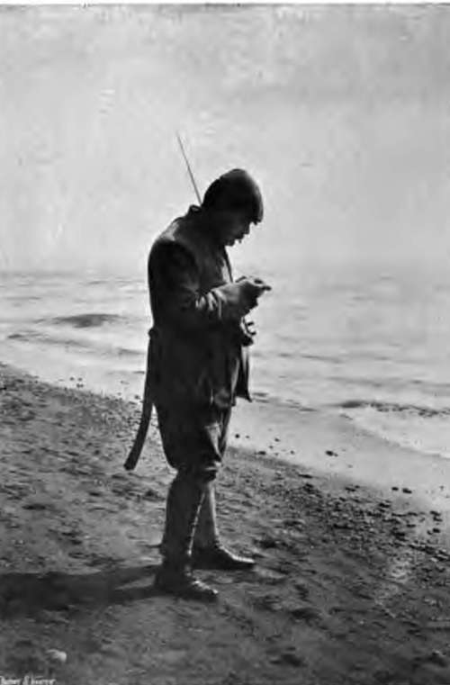
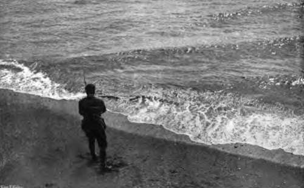

Chapter XXXIII. Sea-Fishing From Fixed Positions: Fishing From Sandy Shores
Description
This section is from the book "Fishing", by Horace G. Hutchinson. Also available from Amazon: Fishing.
Chapter XXXIII. Sea-Fishing From Fixed Positions: Fishing From Sandy Shores
Fishing from a sandy shore is practised under quite different conditions. In the first place it may for the most part be regarded as an autumn and winter, and not as a summer, pastime. The fish caught on open sandy beaches, chiefly cod and whiting, do not on most parts of the coast come into the shallow broken water until the turn of October, and they are gone again in most seasons by the New Year. The shore-haunting fish of summer, the bass and mullet and pollack, keep to the rocks, and can only be caught from the shore in the rocky situations afore-mentioned. As already stated in these notes, I think, this wintry fishing no longer appeals to me. For me the warm summer mornings and evenings, when there is a heat haze over the western bays, and the tar is hot and soft upon the piers. Still, in other days, I, too, delighted in frosty daybreaks on Deal pier, or in crisp moonlight evenings in the Maldon reach of the Essex Blackwater; and for the sake of those who may still, youthful or otherwise, preserve such fine enthusiasms, I gladly ransack the memories of the past for any practical hints that may therein be stored.
88.- Baiting The Hook.
The rod has already been counselled as the right tackle for rock-fishing, not in any slavish adherence to rod-fishing under all sorts and conditions, which I hold to be sometimes overdone in salt water, but because, as suggested in "John Bickerdyke's" amusing prehistoric peep, the rod was specially devised to save the line from the cutting edges of the rocks. On open shores, in fishing on the sand, the rod is a convenience to my mind only where there is a sloping shingle beach, as is, for instance, the case at Hastings at high water, close to the water's edge. The position of the angler sitting on such a slope enables him to hold the rod without discomfort, or it may even be laid down on the shingle while, in cold weather, he takes a stroll up and down to make his blood spin.
A sandy shore, on the other hand, usually comes very gradually down to the water, and the rod is a positive inconvenience. The hand-line, under such conditions, may be used comfortably, and by the simple device of a button close to the lead, and a forked ash pole, such a line may be swung out thirty or forty yards with ease. On the East Coast, indeed, where this style of beach-fishing is much practised during the autumn months, experts will cast even farther. Fifteen or twenty hooks may be used on such a throw-out line, and the best bait is lugworm. Mussel would be even better, perhaps, as far as the tastes of the cod and whiting are concerned, but the throwing loosens the mussel to such an extent, even if it does not jerk it right off the hook, that the fish are able to suck the hooks clean without the fisherman suspecting a bite. The East Coast plan of using more than one line cannot be recommended to any one not fishing for the market, and indeed those whose enthusiasm is mainly commercial would often catch more fish and lose fewer baits if they would confine their attention to one line only, and with fewer hooks, half-a-dozen being quite sufficient for the amateur's purpose. Such a line held in the hand should enable the angler-let me call him "fisherman," since he has not a rod, and thus steer clear of the hypercritical-to feel each bite, and to strike at once and hook his fish, and the fish killed will work out a better average per hook than if fifty hooks were launched in this way and left for the fish to rob.
The leger line is particularly useful on sandy ground and when fishing from a sandy beach. Its chief feature is a pierced lead, generally flat, through which, when the angler is expecting a bite, the line is free to move in one direction only, away from where he stands, its movement in the opposite direction being arrested by a split shot too large to pass the lead. The same principle, of the line running freely one way only, is involved in the somewhat lazy arrangement suggested in the next paragraph. There are various forms of leger lead, but they agree in their plan of action, or rather of inaction, for they all lie on the ground so as not to interfere in the sensitiveness of the tackle, and the readiness with which the fisherman can feel the slightest bite. A leger lead may be used with either rod or hand-line, but on the beach I prefer the latter. The hook is baited with either lugworm or mussel -the latter tied on with yellow worsted to keep it on the hook when throwing out the line-for flat-fish, or with herring or sprat for cod and whiting, and the lead is cast out as far as may be necessary. Then, if using a rod, the angler reels in line until there is no slack between the rod and lead, and the slightest bite will then be registered by the twitching of the rod top. If using the leger with a hand-line, he simply hauls in line until the same condition of tautness is arrived at, and then holds the line between the thumb and forefinger of the right hand, striking as soon as he feels a bite. Two hooks may be used in conjunction with the leger lead, one above and the other beneath it, but more than two are not advisable.
There is an excellent, though somewhat primitive, plan for obviating the exertion of throwing out whenever the fish are removed and the hooks re-baited, which may here be briefly described. A stout stake three feet long, with a ring in the top, is driven well into the sand at low water-mark up to two-thirds of its length, so that only one foot remains above the ground. The line bearing the hooks is passed through the ring, but in place of the lead there is a cross toggle of wood or a piece of wire fixed crosswise on the line, close to the last hook, and too long to pass through the ring. The line must be twice as long as the ordinary throw-out line, and, when the home end has been passed through the ring and pulled through till the further progress of the line is arrested by the wire or wooden toggle, the home end of the line is made fast to the toggle. The position is then this: the line forms an endless band, free to move in either direction through the ring until stopped by the toggle, which cannot pass. Close to the latter are ten or twelve hooks, and these, attached to the main line by six inch lengths of single gut, and of the size previously recommended for mackerel, are baited with lugworm, herring, soft crab, squid, or whatever may be handy in the list of sea-baits. It will easily be seen that the fisherman can sit comfortably above high-water mark and continually pull the hooks towards him; then, when they are re-baited or the fish removed, he can, by pulling the other side of the line, carry them out again into the deeper water. The home end of the line may be hitched over another stake, also driven firmly in the ground, or through a ring let into a heavy stone, or piece of yacht's ballast. This method of fishing was imparted to me fifteen or sixteen years ago by the late Mr. Wilcocks, and capital fun I have had with it in the Hastings district, as have others since then to whom I in turn told the details of management. I do not know that it will bear very strict investigation when considered as sport, but I have long arrived at the conclusion that that widely used term needs an occasionally more generous interpretation than that commonly assigned to it. So long as no unsportsmanlike method, such as dynamite or foul-hooking, is resorted to, a man of modest ambitions may find sport, otherwise recreation, in a style of fishing that the more fastidious would unhesitatingly vote child's-play. Personally, I find no amusement whatever in whiffing for mackerel, but I would hardly condemn it as unsporting on that account. Yet that is precisely what so many people often do when discussing any but the forms of fishing that they individually prefer.
Continue to:
- prev: Sea-Fishing From Fixed Positions: Fishing From Rocks. Part 3
- Table of Contents
- next: Sea-Fishing From Fixed Positions: Fishing From Sandy Shores. Continued